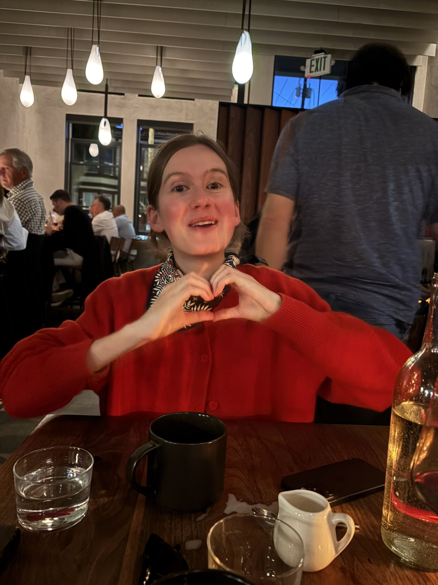
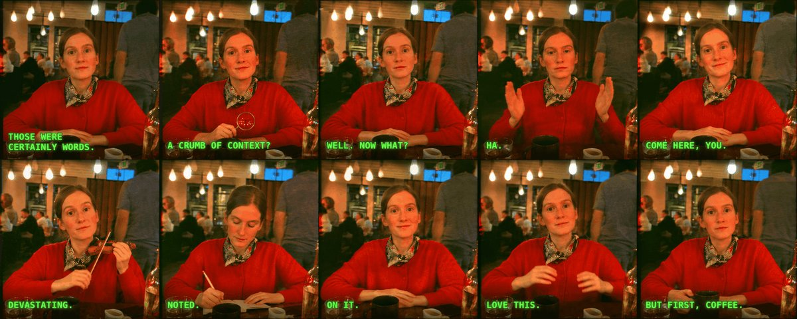

Author: @nonieengel · original source
作者声明 2.6：You can just upload one character photo + a style reference and get a set of 10 custom reaction GIFs… Sharing the prompt below.
作者称直出 GIF · X 附件实际 MP4 · 作者声明 + 媒体元数据已核 · 未观看 · 未复测
License unknown. Local archive, not an author grant. MIT covers source code only.


Create a coordinated set of 10 animated reaction GIFs featuring the main character in Image 1, using Image 2 as the visual style reference. How to use the references Image 1 … （公开帖 note/正文在 Image 1 处截断；回复媒体两张为角色照与风格参考图，非提示词截图。完整条目列表未在 API 文本中完整返回。）